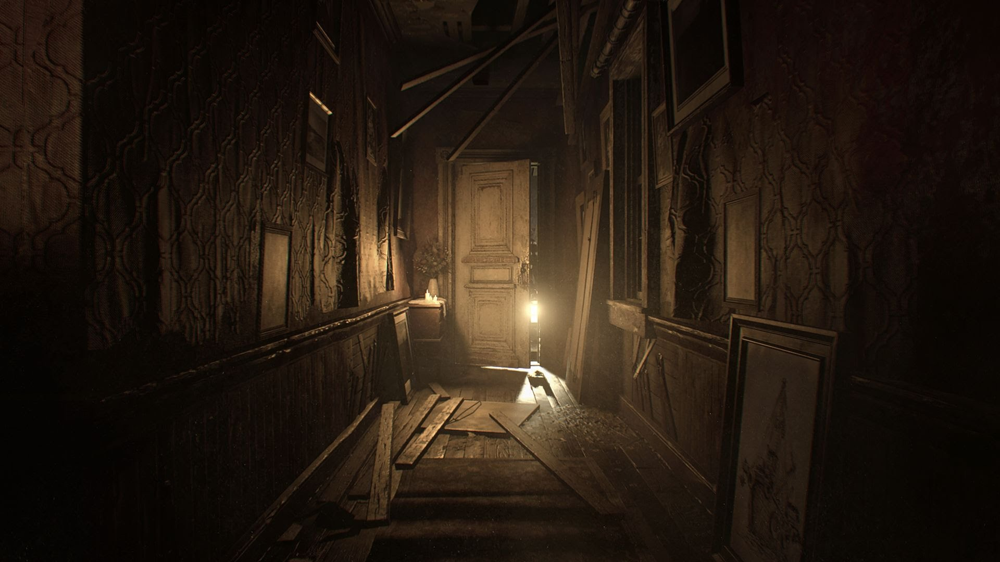

Since its surprise reveal during E3 earlier this year, the story of Resident Evil 7 for many people has been how different it is. For some would-be players, burned by the more action-y bent of recent releases in the franchise such as Resident Evil 6, this is great news. For others, desperate for a return to the days of classic survival horror as seen in the original Resident Evil, the changes don’t seem like enough.
After playing through four hours of a near-final build of Resident Evil 7 this week — around one-third of the full game, according to a Capcom representative present at the time — I’m happy to report that neither of these extremes are exactly correct. Capcom has embraced a lot of new ideas for the franchise with Resident Evil 7, but by and large they’re all serving to prop up things the series has always been known and beloved for.
Though technically taking place after Resident Evil 6 and sure to be connected to the series through some plot twist or another, RE7 feels very stand-alone at the start. Players step into the role of Ethan Winters, a man in search of his missing wife who has been kidnapped by a homicidal backwoods family living in a Louisiana bayou. My demo began with Ethan tied up at a dinner table, surrounded by the creepy family, with father figure Jack attempting to force some really disgusting-looking food down Ethan’s throat.
While this isn’t the precise start of the game — Capcom skipped me ahead a little bit to avoid some major spoilers from the beginning — it was an intense and revolting way to begin my time with Resident Evil 7. The idea of an innocent person kidnapped by an entire family of messed-up killers is a classic horror film concept, going all the way back to 1974’s The Texas Chainsaw Massacre. But the Resident Evil series has never featured this narrative, nor has any other major survival horror game in my memory. It feels fresh and fitting to the medium.
Part of the way that Resident Evil 7 pulls players into this terrifying scenario is through one of the game’s most controversial changes: It is now a first-person game. This perspective shift has received a lot of criticism, but in my time with the game so far, it feels like a smart change that wisely serves the themes of the game.